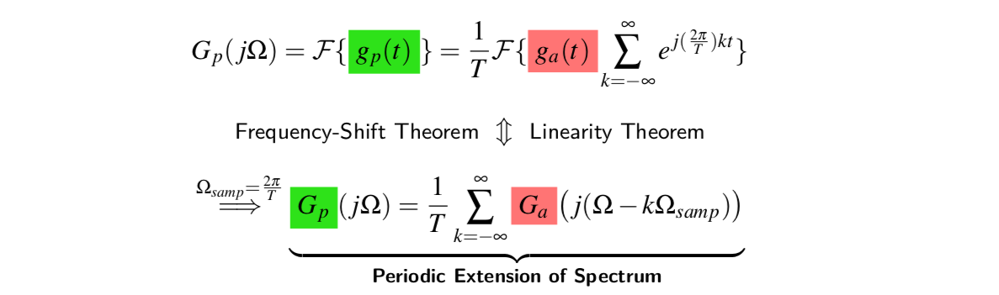

3. 离散时间傅里叶变换¶
前面的一章中，我们学习了离散时间信号和系统在时域中的表示和分析方法。这一章，我们将开始学习离散时间信号在频域中的表示和分析方法。
3.1. 从CTFT到DTFT¶
3.1.1. 傅里叶变换的作用¶
2010年南非世界杯上，“呜呜拉祖”被主场球迷用来作为助威的工具。它可以发出超过一百分贝的噪音，最高可达到一百二十分贝，因此在比赛过程中，特别是比赛转播过程中，呜呜拉祖的声音往往会掩盖住现场解说的声音。所以，对于听解说的球迷来说，呜呜拉祖的助威声音往往就是噪音。我们可以听一听带有呜呜拉祖噪音的语音。

那么，我们如何去除这样的噪音呢？
先给大家听一下一种去除呜呜拉祖噪声算法的结果。
呜呜拉祖噪音的消除是一个复杂的问题，但是基本思路是将时域信号变换到频域，然后从频域将呜呜拉祖噪音去除，然后反变换到时域，从而得到去除呜呜拉祖噪音的语音。
为什么我们可以从频域上将呜呜拉祖噪音去除呢？这是因为原始语音的频率和呜呜拉祖的频率是不同的，人说话的频率主要分布在50~500Hz，而呜呜拉祖的频率一般不同于这个频率。因此，频域中呜呜拉祖噪声和原始的语音信号是可以分离的。基于这个原理，所以一般我们将信号变换到频域，在频域中滤除噪声信号。
本章最后，我们将给大家详细介绍这个算法，敬请期待。
3.1.2. 连续时间傅里叶变换¶
在介绍离散时间傅里叶变换之前，我们首先来回顾一下连续时间傅里叶变换的概念。Joseph Fourier（1768-2830）是法国伟大的数学家、物理学家。从某种意义上来说，傅里叶也可以被称为我们信号处理领域的鼻祖，因为大家所学的《信号与系统》、《数字信号处理》等等课程，从某种以上来说都与傅里叶变换紧密相关。不仅仅如此，傅里叶变换也是研究光学工程、医疗成像、地震预测等等领域中的必备工具。
我们有必要瞻仰一下这位伟大的科学家——Joseph Fourier
傅里叶变换通过这个公式将时域信号\(f(t)\)变换到频域
相信大家对这个公式既熟悉又陌生。之所以熟悉，因为这个公式在《数学分析》、《电路分析》和《信号与系统》中都学到过，也将在未来的专业课学习过程中继续学习，并将贯穿大家整个职业生涯（如果同学们继续从事信息工程领域的话）。而之所以陌生，是因为这个看似简单的傅里叶变换（线性）过程，在不同的应用场合，其内涵是不同的（参考斯坦福课程EE261）。
从信号处理的角度来说，傅里叶变换的一种物理解释为：任意连续且周期的信号都能表示为一系列正弦信号的叠加。
3.1.3. 从连续时间傅里叶变换到离散时间傅里叶变换¶
连续时间信号的傅里叶变换，可以发现时间自变量\(t\)的定义是连续的，
那对离散时间信号来说，其傅里叶变换如何定义呢？首先，我们来回顾一下离散时间信号和连续时间信号之间的关系。

从图中可以看出，离散时间信号是对连续时间信号\(x_a(t)\)的等间隔抽样，数学表达式为
其中，\(T\)为抽样间隔，\(\delta(t)\)为抽样函数。然后，根据傅里叶变换的定义得到抽样后信号的傅里叶变换为
如果定义
带入上面的推导中，可以得到
离散时间傅里叶变换（Discrete-time Fourier Transform DTFT）定义如下：
提示
DTFT变换是对离散时间信号$x[n]$进行的，这里$x[n]$表示$x_a(t)$在$nT$时刻的样本值。
CTFT和DTFT的区别¶
连续时间傅里叶变换和离散时间傅里叶变换的区别主要是以下几点：
计算过程：CTFT是积分运算，DTFT是求和运算；
时域信号：CTFT一般针对连续非周期信号，DTFT一般针对离散非周期信号；
频域表示：CTFT一般频域变换是连续非周期的，DTFT变换是连续且周期的；
参数：CTFT变换的变量是\(\Omega\)，单位是弧度每秒，DTFT变换的变量是\(\omega\)，单位是弧度每样本，二者之间的关系是\(\Omega T = \omega\)。
| 特点 | 连续时间傅里叶变换 | 离散时间傅里叶变换 |
|---|---|---|
| 计算 | 积分运算 | 求和运算 |
| 时域 | 连续非周期 | 离散非周期 |
| 频域 | 连续非周期 | 连续周期 |
| 参数 | $\Omega$ | $\omega$ |
例子：实指数序列的 DTFT¶
考虑实指数序列
其 DTFT 变换为
当参数\(\alpha\in (0,1)\)时，经过化简得到
可以将该序列DTFT 变换的实部、虚部，幅度、相位关于频率之间的关系画出来，如下图所示。
3.1.4. 例子：相机自动对焦算法¶
几乎所有的数码相机都具有自动对焦功能，它能帮助我们自动的调整焦距，从而使得画面更加清晰。基于傅里叶变换，我们也可以设计一个很简单的自动对焦算法。
图像信号，我们可以将其看成是一个二维的离散时间信号。相对应，二维离散时间信号的频域表示也是一个二维图像，如下图所示。中心位置附近是对应低频部分（图中红色圈中区域），主要来自于原始图像的平滑区域；而远离中心位置为高频部分，主要来自于尖锐的边缘和复杂的纹理。
拍摄过程中，如果对焦成功，那么所拍的照片会更清晰，边缘更尖锐，也就是高频成分会比较多。相反，如果对焦不成功，那么所拍的照片就会很模糊，边缘更平滑，也就是低频成分偏多。根据这个原理，我们可以设计一个算法，通过判断拍摄照片的傅里叶变换（频域）中高频成分能量是否最大，来调整相机的焦距。

通过上图，我们可以发现当焦距设置为40毫米的时候，高频成分能量最大，此时成像最清晰。
3.2. 逆 DTFT 变换及收敛性¶
3.2.1. Inverse DTFT¶
离散时间傅里叶变换是将序列从时域变换到频域，变换公式为：
逆离散时间傅里叶变换（IDTFT）则是将频域变换为时域序列，与 DTFT 是反过程，变换公式为：
正交变换对¶
证明 IDTFT 变换和 DTFT 变换是一对正交变换对。
最后一个等式成立的原因是
上述证明表示DTFT 变换和 IDTFT 变换是一对正交变换对。
3.2.2. DTFT 变换的收敛性¶
DTFT 变换是一个无限求和的公式，因此某些序列的 DTFT 可能不收敛。为了保证收敛性，即
根据 DTFT 变换定义，进一步得到如下结论
最后一个不等式称为序列的绝对可和性质。
例子：绝对可和序列¶
考虑如下序列（指数序列）
其DTFT 变换为
上述等式成立的条件为
也就是说序列\(x[n]\)满足绝对可和条件。
DTFT 变换收敛性定义¶
定义\(K\)阶 DTFT 变换逼近如下
那么 DTFT 变换收敛性有一致收敛和均方收敛两种。
一致收敛¶
一致收敛表示：当\(K\)趋近无穷大时，\(K\)阶 DTFT 变换逼近与 DTFT 变换每个频率点都相等，即
均方收敛¶
均方收敛表示：当\(K\)趋近无穷大时，\(K\)阶 DTFT 变换逼近与 DTFT 变换的均方误差趋近于 0，即
DTFT 变换的一致收敛和均方收敛关系可以表示如下：
序列的类型与 DTFT 收敛性¶
根据序列的可和性质，可以将序列分为：绝对可和序列、平方可和序列和非可和序列。序列的可和性质与其 DTFT 变换的收敛性有关。
绝对可和序列¶
平方可和序列¶
非可和序列¶
绝对可和序列的 DTFT 变换一定存在，且满足一致收敛条件，同时也满足均方收敛条件。对于有些序列，不满足绝对可和条件，但是满足平方可和条件，它的 DTFT 变换也存在，例如 Sinc 序列。另外，对于一些非可和序列，例如常数序列、正弦序列等等，它们既不满足绝对可和，也不满足平方可和条件，但是我们仍然可以通过狄拉克函数引入这些序列的 DTFT 变换。这在工程上有非常重要的意义。
下面的表格给出了序列的可和性与其 DTFT 变换收敛性之间的关系。
| 序列类型 | 一致收敛 | 均方收敛 | 狄拉克函数引入 | 举例 |
|---|---|---|---|---|
| 绝对可和序列 | 满足 | 满足 | - | 指数序列 |
| 平方可和序列 | 不满足 | 满足 | - | Sinc序列 |
| 非可和序列 | 不满足 | 不满足 | 满足 | 正弦序列 |
Sinc 序列的 DTFT 变换¶
Sinc 序列是一个特殊的重要序列，它是我们后面要学习的理想低通滤波器的时域形式（其频域形式为门函数）
Sinc 序列不是绝对可和序列，但是是平方可和序列。【参考：Sinc 序列非绝对可和证明】所以，直接根据 DTFT 公式计算
上述求和公式会发散，但是
收敛。 令\(y[n]=\left\{\begin{array}{ll}{1} & {-K \leq n \leq K} \\ {0} & {\text { else }}\end{array}\right.\)，那么可以得到
下图展示了\(H_{LP,K}\left(e^{j \omega}\right)\)的波形图。可以发现，随着 K 的值增大（图中为 N），\(H_{LP,K}\left(e^{j \omega}\right)\)会逐渐逼近\(H_{LP}\left(e^{j \omega}\right)\)。但是二者并不相等，始终存在一些不相等的位置。由于\(h_{LP}[n]\)为平方可和序列，即
满足均方收敛条件。
非可和序列的 DTFT 变换¶
非可和序列既不满足绝对可和条件，也不满足均方可和条件。例如：
常数序列
阶跃序列
正弦序列
这三种序列在工程应用中会经常用到，例如阶跃序列实际上描述了开关的性质，正弦序列是一个 LTI 系统的本征函数。所以，这一类型的序列的离散时间傅里叶变换的定义是非常重要的。工程上，我们一般利用狄拉克函数\(\delta(\omega)\)来引入:
注解
狄拉克函数定义 狄拉克函数满足如下两个条件：
$\delta(\omega)=0, \forall \omega \neq 0$
$\int_{-\pi}^{\pi} \delta(\omega) d \omega=1$
利用狄拉克函数，我们可以定义上述三种特殊序列的 DTFT 变换如下：
3.3. DTFT 变换的性质和定理¶
3.3.1. DTFT 变换的性质¶
一般来说，序列的 DTFT 变换\(X\left(e^{j \omega}\right)\)一般是关于实数变量\(\omega\)的复数函数。那么，根据复数的两种表达形式：笛卡儿坐标和极坐标形式。
笛卡尔坐标形式：\(X\left(e^{j \omega}\right)\)可以分成实部和虚部两个部分
其中\(X_{re}\left(e^{j \omega}\right)\) 为实部，\(X_{im}\left(e^{j \omega}\right)\)为虚部。
极坐标形式：\(X\left(e^{j \omega}\right)\)可以分解为幅度部分和相位部分
其中\(|X\left(e^{j \omega}\right)|\) 为幅度，\(\theta(\omega)\)为相位。
前面的章节，我们已经计算出来指数序列\(x[n]=\alpha^{n} \mu[n]\)的傅里叶变换为
然后通过欧拉公式，很容易计算得到该序列的傅里叶变换的实部和虚部，以及幅度和相位，它们的波形图如下图所示。通常，我们称序列在频域的幅度波形为幅度谱，而其相位波形为相位谱。
两种形式的表示可以通过下面的公式进行转换：
基本性质¶
连续性：离散时间傅里叶变换是关于归一化频率\(\omega\)的连续函数。
周期性：离散时间傅里叶变换是关于\(\omega\)的周期函数，重复周期为\(2\pi\)
提示
这也就是为什么我们将 DTFT 变换一般写成$X(e^{j \omega })$形式，而不写成$X(\omega)$。
对称性质¶
实序列的对称性：实序列的傅里叶变换是共轭对称的。
根据这个性质，我们可以总结出如下结论：
| DTFT 变换性质 | DTFT 对称性质公式描述 |
|---|---|
| $x[n] \in \mathbb{R}$ | $X\left(e^{j \omega}\right)=X_{r e}\left(e^{j \omega}\right)+j X_{i m}\left(e^{j \omega}\right)$ |
| 共轭对称 | $X\left(e^{j \omega}\right)=X^{*}\left(e^{-j \omega}\right)$ |
| 实部偶对称 | $X_{r e}\left(e^{j \omega}\right)=X_{r e}\left(e^{-j \omega}\right)$ |
| 实部奇对称 | $X_{i m}\left(e^{j \omega}\right)=-X_{i m}\left(e^{-j \omega}\right)$ |
| 幅度偶对称 | $ \left\vert X\left(e^{j \omega}\right)\right\vert=\left\vert X\left(e^{-j \omega}\right)\right\vert $ |
| 相位奇对称 | $\theta(\omega)=-\theta(-\omega)$ |
复序列的对称性
复序列DTFT 变换的对称性较为复杂，令序列$x[n]\in \mathbb{C}$是复序列，其 DTFT 变换表示为$X(e^{j\omega})$，下面给出序列$x[n]$的对称、共轭对称、实部、虚部序列的傅里叶变换和$X(e^{j\omega})$的关系。
重要
$x[n]$的对称序列：$x[-n] \leftrightarrow X(e^{-j\omega})$
$x[n]$的共轭对称序列：$x^*[-n] \leftrightarrow X^*(e^{j\omega})$
$x[n]$的实部：$x_{r e}[n]=\frac{1}{2}\left(x[n]+x^{*}[n]\right) \leftrightarrow X_{c s}\left(e^{j \omega}\right)=\frac{1}{2}\left\{X\left(e^{j \omega}\right)+X^{*}\left(e^{-j \omega}\right)\right\}$
$x[n]$的实部：$j x_{i m}[n]=\frac{1}{2}\left(x[n]-x^{*}[n]\right) \leftrightarrow X_{c a}\left(e^{j \omega}\right)=\frac{1}{2}\left\{X\left(e^{j \omega}\right)-X^{*}\left(e^{-j \omega}\right)\right\} $
基于上述四个复序列的对称性质，可以很容易归纳出共轭对称和共轭反对称序列的傅里叶变换的对称性质。
注解
共轭（反）对称序列
共轭对称序列满足：$ x_{cs}[n] = x^*_{cs}[-n] $
共轭反对称序列满足：$ x_{as}[n] = -x^*_{as}[-n] $
任意的共轭对称序列都可以分解为
那么根据共轭对称序列$x^*[-n]$的性质可以得到$x_{c s}[n]$的DTFT 变换为$x[n]$DTFT 变换的实部，即$x_{c s}[n] \leftrightarrow X_{re}(e^{j\omega})$。
任意的共轭反对称序列都可以分解为
那么根据共轭对称序列$x^*[-n]$的性质可以得到$x_{c s}[n]$的DTFT 变换为$x[n]$DTFT 变换的虚部，即$x_{c s}[n] \leftrightarrow jX_{im}(e^{j\omega})$。
3.3.2. DTFT 变换的定理¶
令序列$x[n]$和$y[n]$都是任意的复序列，他们的DTFT 变换分别为$X(e^{j\omega})$和$Y(e^{j\omega})$，那么 DTFT 变换的定理可以归纳如下表
| 定理 | 序列 | DTFT 变换 |
|---|---|---|
| 线性定理 | $ax[n]+ by[n]$ | $a X\left(e^{j \omega}\right)+b Y\left(e^{j \omega}\right)$ |
| 时移定理 | $x[n-n_0]$ | $e^{-j \omega n_{0}} X\left(e^{j \omega}\right)$ |
| 时间翻转定理 | $x[-n]$ | $X\left(e^{-j \omega}\right)$ |
| 频移定理 | $e^{j\omega_0n}x[n]$ | $X\left(e^{j\left(\omega-\omega_{0}\right)}\right)$ |
| 共轭定理 | $x^*[n]$ | $ X^{*}\left(e^{-j \omega}\right)$ |
| 卷积定理 | $x[n]\circledast y[n]$ | $X\left(e^{j \omega}\right) Y\left(e^{j \omega}\right)$ |
| 频率微分定理 | $nx[n]$ | $j \frac{d X\left(e^{j \omega}\right)}{d \omega}$ |
| Parseval 定理 | $\sum_{n=-\infty}^{\infty} x[n] y^{*}[n]$ | $\frac{1}{2 \pi} \int_{-\pi}^{\pi} Y^{*}\left(e^{j \omega}\right) X\left(e^{j \omega}\right) d \omega$ |
| 差分定理 | $x[n]-x[n-1]$ | $\left(1-e^{-j \omega}\right) X\left(e^{j \omega}\right)$ |
| 累加定理 | $\sum_{k=-\infty}^{n} x[k]$ | $\frac{X\left(e^{j \omega}\right)}{1-e^{-j \omega}}+\pi X\left(e^{j 0}\right) \sum_{k=-\infty}^{\infty} \delta(\omega+2 \pi k) $ |
3.4. 典型序列的 DTFT 变换¶
典型序列的 DTFT 变换在工程应用中会经常使用，这里我们给出这些常用序列的 DTFT 变换。
| 序列名称 | 序列表达式 | 序列 DTFT 变换 |
|---|---|---|
| 狄拉克（抽样）序列 | $\delta[n]$ | 1 |
| 常数序列 | $1,(-\infty<n<\infty)$ | $\sum_{k=-\infty}^{\infty} 2 \pi \delta(\omega+2 \pi k)$ |
| 阶跃序列 | $\mu[n]$ | $\frac{1}{1-e^{-j \omega}}+\sum_{k=-\infty}^{\infty} \pi \delta(\omega+2 \pi k)$ |
| 指数正弦序列 | $e^{j \omega_{0} n}$ | $\sum_{k=-\infty}^{\infty} 2 \pi \delta\left(\omega-\omega_{0}+2 \pi k\right)$ |
| 因果指数序列 | $\alpha^{n} \mu[n],(\vert \alpha\vert<1)$ | $\frac{1}{1-\alpha e^{-j \omega}}$ |
| Sinc 序列 | $h_{L P}[n]=\frac{\sin \omega_{c} n}{\pi n}$ | $H_{L P}\left(e^{j \omega}\right)=\begin{cases} {1,} & {0 \leq\vert\omega\vert \leq \omega_{c}} \\ 0, & {\omega_{c} \leq\vert\omega\vert \leq \pi}\end{cases}$ |
提示
点击序列名称可以查看对应序列 DTFT 变换的计算过程.
3.5. 采样与重建¶
3.5.1. 采样过程的数学描述¶
连续时间信号通过等间隔采样可以得到离散时间信号，那么这个过程可以用下图来描述。
从图中可以看出，采样过程可以表示为连续时间信号和脉冲序列的乘积，即
其中，$g_a(t)$为连续时间信号，$g_p(t)$为离散时间信号，$p(t)$为脉冲序列。
因为采样序列是周期信号，那么可以通过傅里叶级数展开
其中系数
时间$T$为采样周期。从而得到采样信号$p(t)$实际上是多个正弦指数信号的线性叠加
带入采样后信号$g_p(t)$的表达式可以得到
根据频移定理和线性定理可以得到采样后信号$g_p(t)$的傅里叶变换

通过上面的公式，我们可以发现采样后信号$g_p(t)$的频谱实际上是采样前信号$g_a(t)$频谱的周期延拓，如下图所示。
原始连续信号经过周期采样后，得到的信号的频谱实际上就是将原始信号频谱以$\Omega_{samp}$（采样角频率）为间隔，周期搬移，然后叠加而成。这是一个非常重要性质。
不难发现，频谱周期搬移的距离依赖于采样角频率$\Omega_{samp} = \frac{2\pi}{T}$。也就是说，采样周期越大（采样频率越低），搬移的距离$\Omega_{samp}$越小；反之，采样周期越小（采样频率越高），搬移的距离$\Omega_{samp}$越大，频谱之间间隔越分散。
3.5.2. 采样定理¶
假设一个模拟信号$g_a(t)$的频谱是带限的，如下图所示。也就是说，当$|\Omega|>\Omega_M$时，频谱为 0。
现在如果选择的采样频率$\Omega_{samp}>2\Omega_M$，那么采样后得到的离散时间信号的频谱$X(e^{j\omega})$看起来就如下图所示。
这种情况下，我们有如下关系式
这时离散时间信号的频谱在频率区间$ |\Omega| \leq \frac{\Omega_{samp}}{2}$内，和模拟信号的频谱相同，只不过多了一个尺度因子$\frac{1}{T}$。这种情况下，如果我们想从离散时间信号中恢复出原始模拟信号，就只需要将$ |\Omega| \leq \frac{\Omega_{samp}}{2}$以外的频率成分滤除掉，就可以无失真的恢复原始模拟信号了。
另外一种情况，若选择的采样频率$\Omega_{samp}<2\Omega_M$，则对模拟信号$G_a(j\Omega)$的频谱搬移会导致频谱重叠，如下图所示。
这时，离散时间信号的频谱$X(e^{j\omega})$含有模拟信号频谱$G_a(j\Omega)$的混叠频率成分，由于出现了混叠，结果使得我们无法从样本中恢复出原始信号$g_a(t)$。
综上所述，采样频率必须满足大于或者等于 2 倍信号带宽（最高频率），才能保证模拟信号唯一的从离散时间信号中重建。过小的采样频率会导致频谱混叠现象的发生，从而无法从离散时间信号中恢复原始模拟信号。我们把 2 倍信号带宽的频率称为 Nyquist 频率。
注解
采样定理: 带限连续时间信号，它的最高频率为$\Omega_{M}$，如果采样频率$\Omega_{samp}\geq 2\Omega_M$，那么就可以从采样后得到的离散时间信号中唯一的恢复出原始信号。
采样过程是将模拟信号转换成离散时间信号，这个过程通常通过 AD 转换器来完成。因此，学习本节内容后，我们应该掌握如何根据模拟信号的性质（带宽）来选择合适的 AD 转换器。例如，我们想进行语音信号的数字采集，并且知道语音信号的频谱范围在 500Hz 到 3.4KHz 范围，所以AD 转换器的采样频率应该至少为 6.8KHz，但是考虑到噪声的影响以及后续重建过程中重建滤波器的设计等因素，通常我们选择 8KHz 作为语音信号采集系统中 AD 转换器的采样频率。
3.5.3. 模拟信号重建¶
重建过程是将离散时间信号转换成模拟信号。要保证无失真重建出原始模拟信号，采样频率需要满足 Nyquist 频率，保证其采样过程不发生频谱混叠现象。根据上一节的分析，若不存在混叠，我们就可以从样本中重建原始模拟信号。
\begin{equation} \hat G_a(j\Omega) =\begin{cases} T G_p(j\Omega) , & |\Omega| \leq \frac{\Omega_{samp}}{2} \\ 0, & |\Omega| > \frac{\Omega_{samp}}{2} \end{cases} \label{eq:x} \end{equation}
提示
公式\eqref{eq:x}可以看做是一个理想低通滤波器的处理，截止频率为$\frac{\Omega_{samp}}{2}$。
通过傅里叶逆变换得到$g_a(t)$
\begin{equation}\label{eq:gat} \hat g_a(t) = \frac{T}{2\pi}\int_{-\Omega_{samp}/2}^{\Omega_{samp}/2} G_p(j\Omega) e^{j\Omega t} d\Omega \end{equation}
若已知样本值$x[n]$，那么$G_p(j\Omega)$可以通过 CTFT 和 DTFT 的关系计算出来
\begin{equation} \hat G_p(j\Omega) = \sum_{n=-\infty}^{\infty} x[n] e^{-j \Omega n T } \label{eq:gpdtft} \end{equation}
那么将\eqref{eq:gpdtft}带入到公式\eqref{eq:gat}，可以得到$g_a(t)$的重建公式
从最后一个公式可以看出，模拟信号的重建过程实际上是将 Sinc 函数经过适当的平移$nT$，$n\in \mathbb{Z}$，并与相应信号样本$x[n]$相乘或加权得到。所以说，可以将重建过程看做是一个插值过程，其中插值函数为Sinc 函数。这个过程可以通过下图来描述。
提示
非带限信号采样：对于非带限信号，其最大频率成分$\Omega_M \to \infty$，采用本节所描述的方法是不可能从离散时间信号中无失真的恢复原始模拟信号的。因此，我们只能尽量恢复出最接近原始模拟信号的重建。这也就是下一节”抗混叠滤波器“的作用。
3.5.4. 抗混叠滤波器¶
抗混叠滤波器的作用主要是用来将非带限信号转换成带限信号，从而使得最后重建的信号更接近原始模拟信号。假设$g_a(t)$的频谱$G_a(j\Omega)$是非带限的，当我们用频率为$\Omega_T$的采样序列将其转换成离散时间信号$g_p(t)$或者$x[n]$，然后重建，得到$\hat g_a(t)$。从公式\eqref{eq:x}中可以知道，重建过程实际上就是将频带$\Omega_T/2$外的频谱去除，即
此时，可以分析重建误差为
上式第一项为带外误差，可以发现这一项与重建结果是不相关的；第二项为带内误差，这个误差与重建结果$\hat G_a$相关，并且当$\hat G_a = G_a$在带内$[{-\Omega_{T}/2},{\Omega_{T}/2}]$成立时，可以使得带内误差为 0，达到最小。为了达到这个目的，我只需要在对非带限信号在采样之前，进行滤波处理，将其频带限制在$[{-\Omega_{T}/2},{\Omega_{T}/2}]$内。在采样时，通过这个滤波处理也能避免频谱混叠的问题，也正是这个原因，我们称这种在信号采样之前进行的低通或者带通滤波器为抗混叠滤波器。
所以，一个完整的采样和重建系统应该包含如下几个步骤：